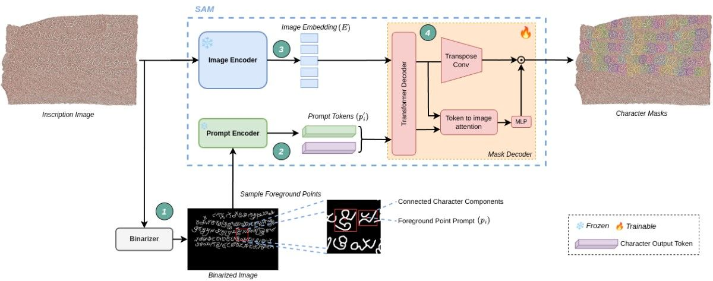
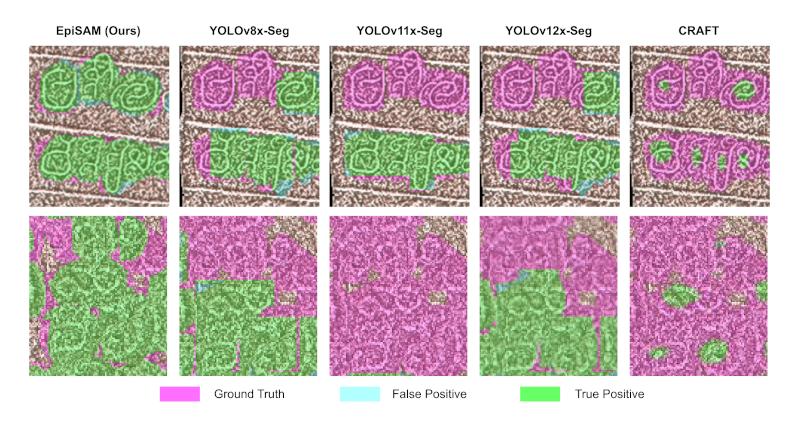
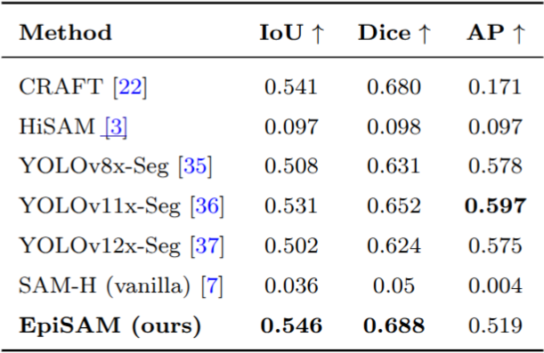

Stone inscriptions are invaluable sources of historical and linguistic knowledge, yet their automated analysis remains a major challenge due to surface irregularities, erosion, and low visual contrast. Conventional document and handwriting analysis techniques fail to perform well in these scenarios. In this work, we propose character detection as a core strategy for robust inscription analysis and propose EpiSAM, a point-guided transformer framework for character segmentation in stone inscriptions. Our approach leverages visual representation and prompt-based localization strengths of the Segment Anything Model (SAM) to produce fine-grained character masks. Furthermore, we extend the Shilalekhya Inscription Dataset, which comprises of stone inscription images and binary text masks by adding detailed character polygonal annotations, creating a new benchmark for epigraphic analysis. Experimental results demonstrate that EpiSAM achieves accurate character segmentation in highly degraded inscriptions.
We propose EpiSAM, a point-guided transformer architecture for character segmentation in stone inscriptions. Our method leverages the strong visual representation and prompt-based localization capabilities of the Segment Anything Model (SAM) to produce fine-grained masks guided by sparse prompts.
To evaluate our approach, we create a benchmark dataset by annotating precise character-level polygons for historical stone inscriptions in Kannada script (a southern Indian script). We extend the Shilalekhya Inscription Binarization Dataset of heavily degraded Indic stone inscriptions. These inscriptions span diverse historical periods, styles of etching, physical conditions and the background surface is visually indistinguishable from noise. This extension establishes a new benchmark for research in computational epigraphy.

Qualitative comparison of character segmentation results. From left to right: predictions from our proposed EpiSAM, YOLOv8-Seg, YOLOv11-Seg, YOLOv12-Seg, CRAFT. The character masks produced by EpiSAM are noticeably more accurate, complete, and resilient to surface fractures, erosion, and variations in text density.

EpiSAM outperforms existing segmentation methods across all metrics, demonstrating improved localization and boundary precision in degraded inscriptions.

The extended Shilalekhya Inscription Dataset will be made publically available soon.
If you have any question, please contact Dr. Ravi Kiran Sarvadevabhatla at ravi.kiran@iiit.ac.in.